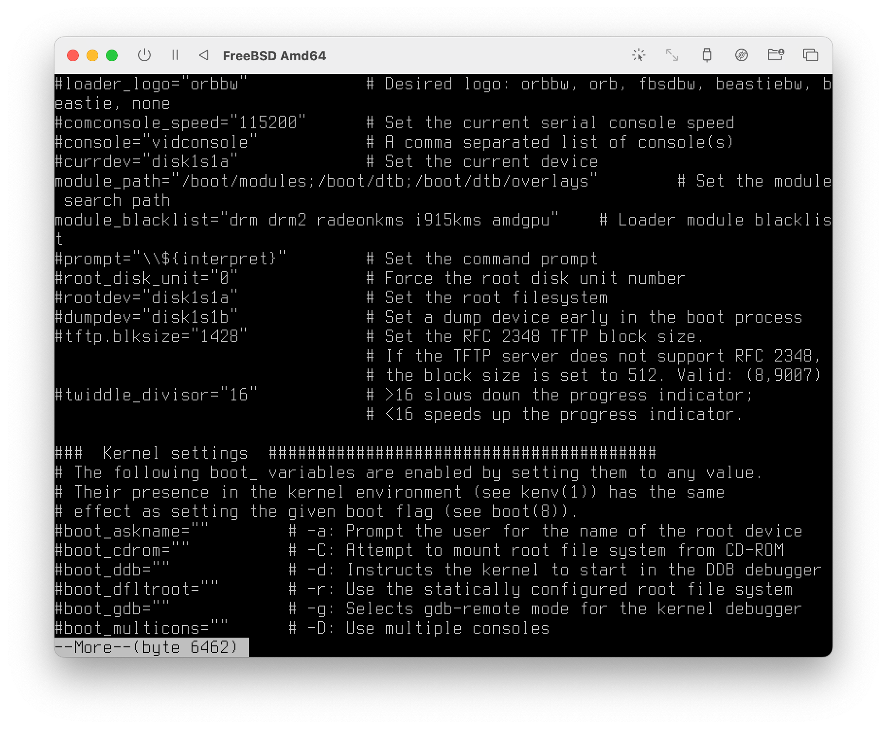
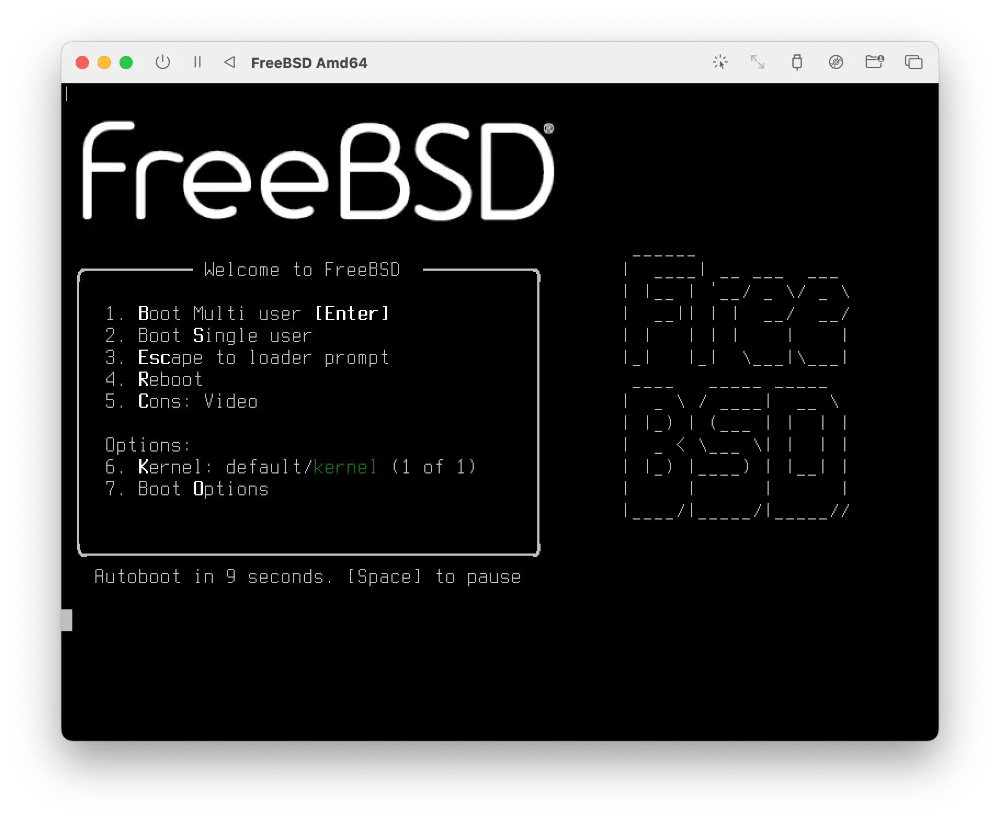
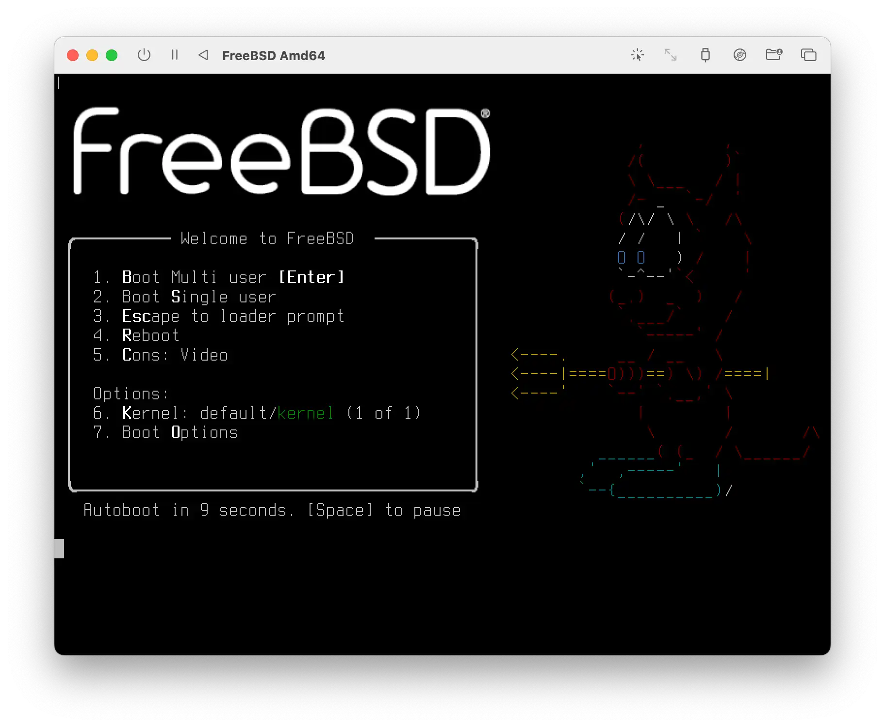
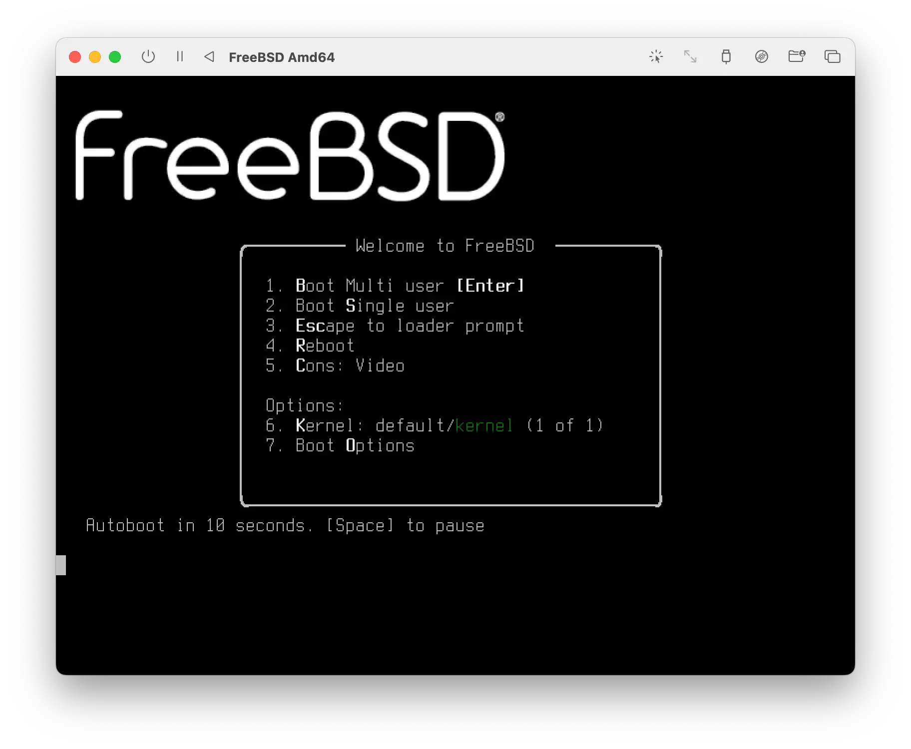

Loader Configuration File (loader.conf) Structure in FreeBSD
FreeBSD manages system settings using default files and separate customization files. This allows users to modify settings without directly editing the default configurations, ensuring compatibility during upgrades and providing a clear way to view and customize system options.

User edited /boot/loader.conf, but full version of config file, default one located at /boot/defaults/loader.conf
cat /boot/defaults/loader.conf | more
Basic configuration options
These settings control fundamental aspects of the system boot process, such as where to find the kernel, what configuration files to load, and how much detail to display during startup.
Splash screen configuration
This setting lets you customize the splash screen that shows up when the system starts, by picking the type of image and whether it appears at all.
Screen saver modules
Controls whether a screensaver is loaded and which one to use.
Early host ID configuration
Determines how the system’s unique identifier is loaded during startup. Currently, it’s loaded from a file called “/etc/hostid”.
Random number generator configuration
Manages how the system gathers randomness for security and other purposes. It includes settings for loading cached randomness at boot and using the UEFI hardware random number generator. Currently, both options are enabled.
RAM Blacklist
This section allows you to exclude specific memory addresses from being used by the system. This can be helpful if you have faulty RAM and want to prevent the system from accessing those problematic areas. Currently, this feature is disabled (ram_blacklist_load=“NO”).
Microcode Loading
This section controls whether the system loads and applies microcode updates during boot. Microcode updates are small patches for your CPU that can fix bugs or improve performance. Currently, microcode loading is disabled (cpu_microcode_load=“NO”).
ACPI Settings
This section deals with the Advanced Configuration and Power Interface (ACPI), which is responsible for power management and device configuration.
ACPI settings
These options let you customize the system’s power management and device configuration, including overriding default settings and managing video drivers.
Audit settings
These options allow you to enable or disable audit logging, which records system events for security purposes.
Initial memory disk settings
These settings, currently disabled, allow for the creation of a RAM disk at boot, potentially used as the root filesystem.
Loader settings
These options control various aspects of the boot process, such as boot delays, password protection, and display options. Example:
- beastie_disable=“NO” turn the beastie boot menu on and off
- efi_max_resolution=“1x1” Set the max resolution for EFI loader to use: 480p, 720p, - 1080p, 1440p, 2160p/4k, 5k, or WidthsHeight (e.g 1920:1080)
- loader_logo=“orbbw” Desired logo: orbbw, orb, fbsdbw, beastiebw, beastie, none
loader_logo=“orbw”:
loader_logo=“orb”:
loader_logo=“fbsdbu”:

loader_logo=“beastiebw”:
loader_logo=“beastie”:

loader_logo=“none”:

Kernel settings
Boot Options: These settings control how the system starts up. They include options like prompting for the root device, booting from CD-ROM, starting in debug mode, using multiple consoles, muting the console, pausing during device probing, using a serial console, starting in single-user mode (for maintenance), and increasing the level of debugging information during boot.
boot_single=“” -s: Start system in single-user mode
boot_pause=“” -p: Pause after each line during device probing
Init Settings: These settings control the system initialization process, including the path to the init program, the shell used by init, and options for running a script or changing the root directory before the system fully starts up.
kern.maxtsiz=“” Set max text size
Kernel tunables
This section of the configuration file focuses on fine-tuning the kernel’s boot process, module loading, memory limits, file limits, kernel timer rate, and other initialization parameters.
Module loading syntax example
Settings for managing power and device configuration, security logging, initial RAM disk setup, and the boot process itself.